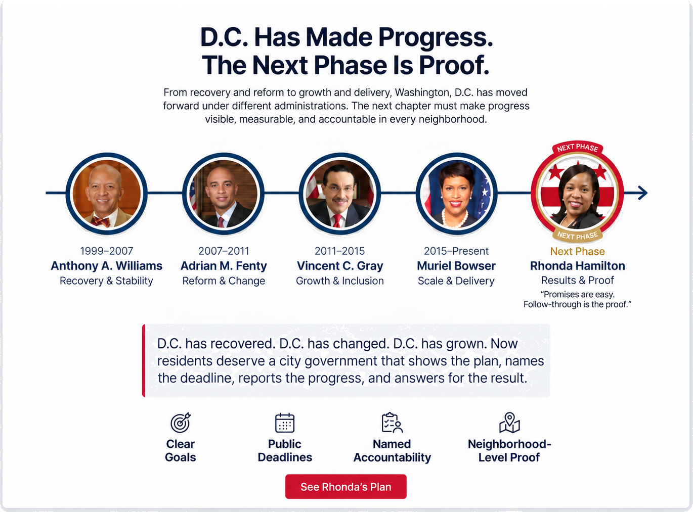

Task
Reverse Engineer
Criticism By
Creating These
Videos
Take every public critique and build the video that answers it. These are the first videos to make: each critique gets answered on the podcast the campaign already films weekly, then the answers are clipped and seeded through the process below.
Public Critique
"Who is Rhonda Hamilton?"
The Strategy
A recurring candidate-origin-story series: “Who Is Rhonda Hamilton?”
Public Critique
"Is she a serious citywide candidate?"
The Strategy
Content showing consistent activity, resident conversations, issue fluency, community proof, events, and organization.
Public Critique
"What does independent mean?"
The Strategy
An “Independent, Explained” content pillar that frames independence as resident accountability—not isolation.
Public Critique
"What has she actually done?"
The Strategy
A “Proof, Not Slogans” content pillar covering ANC service, nonprofit leadership, mental-health advocacy, and business experience.
Public Critique
"She lost in 2022—why run again?"
The Strategy
A “Why I Ran Again” response: she did not disappear after the prior election and continued her work in the community.
Public Critique
"Is she only a mental-health candidate?"
The Strategy
A “Beyond Mental Health” lane connecting mental health to housing, safety, schools, jobs, and city services.
The Ultimate Critique
"Her campaign may not look organized or polished."
The Strategy
The plan says not to debate this publicly; instead, show disciplined, consistent content, professional presentation, schedules, neighborhood activity, and real proof.
Audit Insights
What D.C. Told Us
The audit is done. Two 2026 citywide polls, the 2025 public safety poll, Board of Elections turnout, voter registration, and 311 data. Every finding is labeled by what it is. These numbers determine the messaging.
Central Brand Position
Promises are easy.
Follow-through is the proof.
Repeatable Content Package Example
Public Question
"Why does it feel like residents have to fight for basic city services?"
Hamilton Perspective
"Government should not make residents chase the same problem... the city should show the timeline and result."
Short-Form Hook
"How long should it take D.C. to fix a basic problem?"
Swipe Post Concept
"Five city services residents should be able to track publicly."
Phase Three
The Organic Content System
Designed to maximize D.C.-market impressions, familiarity, and recognition before requesting donations or votes.
Podcast Clipping Campaign
Hamilton’s podcast appearances, interviews, recorded conversations, speeches, and long-form discussions will be divided into short, position-based clips.
Each clip will focus on one clear idea.
Core categories include
- Who is Rhonda Hamilton?
- Why is she running?
- What does being independent mean?
- What has she seen in the D.C. community?
- What do residents deserve from local government?
- Why does accountability matter?
- Why do promises often fail?
- What does follow-through look like?
- Her position on major D.C. issues
- What she believes current leadership is missing
- What she would do differently
- What promise she would refuse to make
- What residents should demand before trusting another political promise
Each source clip will be repackaged with different
- Opening hooks
- Captions
- On-screen text
- Cover frames
- Questions
- Comment prompts
- Visual cutdowns
- Video lengths
- Platform-specific edits
The goal is to make one long-form recording produce multiple audience-entry points.
A 40-minute interview should not become one post. It should become a library of 15 to 40 usable assets.
Example clip versions
Original message
“D.C. residents are tired of hearing promises without a way to measure whether the work was actually done.”
Version One: Direct hook
“Why should anyone trust another D.C. politician?”
Version Two: Accountability hook
“Every campaign makes promises. Here is what should happen after Election Day.”
Version Three: Community hook
“If your neighborhood keeps reporting the same problems, the system is not working.”
Version Four: Independent identity hook
“Being independent means I do not need permission to tell residents the truth.”
Content Folder
A content folder that all the clippers and volunteers can download from and make a post daily.
TikTok and Instagram Reels Discovery Content
TikTok and Instagram Reels will serve as the primary top-of-funnel discovery platforms.
The content will be direct, conversational, understandable, visual, and built around one question or tension at a time.
The first one to three seconds must create immediate curiosity.
Core content categories include
- Who is Rhonda Hamilton?
- Why is she running for mayor?
- What does being independent mean in D.C.?
- What should residents expect from a mayor?
- Why do politicians make promises they do not fulfill?
- What does reliable leadership actually look like?
- What should residents demand before believing another promise?
- What D.C. issue do residents feel is ignored?
- Why do city problems keep returning?
- What should be fixed first in D.C.?
- What is one thing people misunderstand about D.C. government?
- What does accountability look like after an election?
- What does Rhonda Hamilton believe D.C. can do better?
Content should avoid sounding like a speech, commercial, or press release.
It should feel like Rhonda Hamilton is speaking directly to a person who has a real question about D.C.
Organic content formats
Direct-to-camera response
Establishes voice and point of view
Podcast clip
Uses existing credibility and long-form content
Street conversation
Shows personality and spontaneity
Issue explainer
Makes a complicated subject understandable
Poll or question post
Encourages lightweight engagement
Swipe post
Creates saves and shares
Local reaction clip
Connects to a current D.C. conversation
Community response
Shows Hamilton listening
Day-in-the-life content
Makes the candidate feel human
Myth-versus-fact content
Clarifies confusion
Facebook Campaign Content Hub
Facebook will serve as the campaign’s long-form social library and community-response channel.
It will organize
- Podcast clips
- Longer interviews
- Street conversations
- Informational videos
- Polls
- Issue explainers
- Community feedback
- Candidate updates
- Event content
- Campaign announcements
- Local-news reactions
- Behind-the-scenes content
- Reposted content from TikTok and Instagram
Facebook’s role is not limited to viral discovery. It gives residents a place to watch longer content, revisit a topic, comment in more detail, and share content inside family, neighborhood, and community networks.
The campaign website should remain the primary owned destination for official positions, signups, events, donations, and voter information. Facebook is the social library and community layer that feeds viewers toward that owned campaign infrastructure.
Local Theme-Page Distribution
Selected clips will be distributed through established D.C. pages that already reach local audiences through music, culture, lifestyle, community, neighborhood news, politics, entertainment, and young-adult life in D.C.
Potential page categories include
- D.C. music pages
- Local culture pages
- Lifestyle pages
- Neighborhood pages
- Community news pages
- Black D.C. culture pages
- Young professional pages
- D.C. food and nightlife pages
- Local comedy and humor pages
- Small-business pages
- D.C. event pages
- Civic and political discussion pages
The purpose is to introduce Hamilton inside content environments where residents already spend attention.
This expands her visibility beyond traditional campaign pages and formal political media.
The strategy should prioritize
- Local audience quality over follower count
- D.C. reach over broad DMV reach
- Real engagement over inflated likes
- Pages whose content style aligns with Hamilton’s brand
- Pages with a credible audience relationship
- Posts that feel native to the page instead of forced political advertising
Every paid placement should be clearly disclosed in accordance with platform and campaign-finance requirements.
Man-on-the-Street and Neighborhood Conversations
Man-on-the-street content will give viewers a chance to see Hamilton outside a podium, press release, studio, or formal campaign setting.
The objective is not to make a staged political commercial. The objective is to show that she can talk naturally, answer questions directly, and engage with real D.C. residents.
The format can include
- A host asking Hamilton direct questions
- Hamilton walking through a neighborhood
- Residents asking real questions
- Short “rapid response” question rounds
- Community members describing a concern
- Hamilton responding to a local issue on location
- A “what would you fix first?” format
- A “what do you want city hall to understand?” format
Questions can include
- Why are you running for mayor?
- What does independent actually mean?
- Why should anyone trust another politician?
- What have D.C. leaders been getting wrong?
- What promise would you refuse to make?
- What should residents be able to hold a mayor accountable for?
- What does follow-through mean to you?
- What issue do you hear about most from residents?
- What should government explain more clearly?
- What is one thing D.C. residents should not have to accept?
The tone should feel loose, human, clear, and watchable.
Hamilton should sound prepared but not over-rehearsed. Viewers should see how she thinks, how she listens, and whether she can answer a question without hiding behind political language.
Organic Distribution Funnel
Exposure
Put Rhonda Hamilton in front of D.C. audiences natively through Reels, TikToks, and street videos.
Recognition
Make her face, name, and independent identity memorable via repeated clips and visual branding.
Association
Connect Hamilton to reliability and follow-through using issue explainers and accountability clips.
Handoff
Send warm audiences who watched, clicked, or visited to the campaign website and app we build: poll, contact capture, volunteer signup, donation. Then prepare them for paid outreach.
Clipping & Seeding Process
Massive impressions, mentions, word of mouth, saves, reposts, and add-to-story. The winners become Facebook and Instagram ads.
Collect
Podcast shows, interviews, street conversations, and every other content asset go into one shared Google Drive the day they are recorded.
Review
Download each recording and run it through Opus Clip. AI review finds the clips with viral potential and flags the repositioning.
Reposition
Each winning moment is cut with multiple hooks, captions, and opening frames: direct, accountability, community, independent identity.
Campaign Content Folder
Finished clips are stored in one Drive folder with captions and hashtags, ready for every volunteer to post to their Instagram or TikTok.
Post & Seed
Daily Posters: recruited volunteers who post one clip a day from the folder. Seeders: owners of local and targeted theme pages, repost pages, and meme pages who push clips into audiences we do not own.
Measure & Scale
Track impressions, mentions, word of mouth, saves, reposts, and add-to-story on every clip. The high performers get turned into Facebook and Instagram ads.
What Is The Cost?
The organic content builds the audience. The paid system scales the audience. The audience wins the election.
Campaign Website & App
Web, mobile, and progressive web app. Capture the poll, capture the contact, then donate. Positions, volunteer signup, events, and voter information.
Social Media
- Podcast clipping and content asset storage. Find the most viral clips and add them to the campaign content folder.
- Seeders: local and targeted theme pages, repost pages, and meme pages.
- New videos: self-analysis and top-of-funnel.
- Facebook fan page setup.
- Ads, as an option.